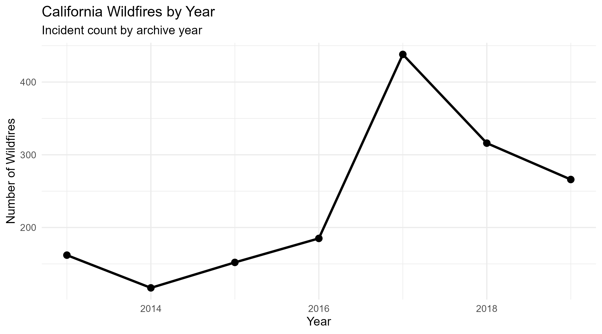
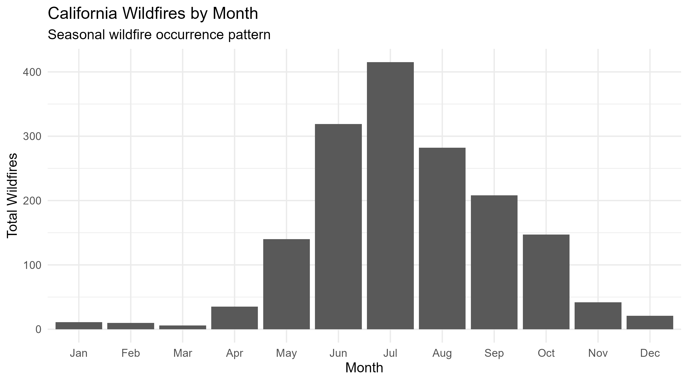
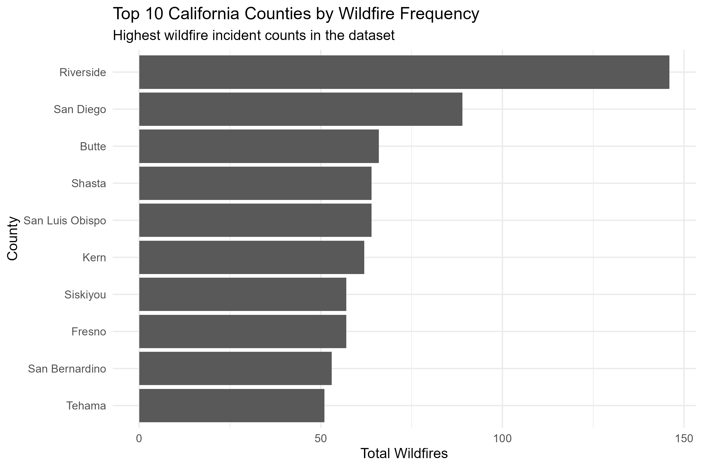
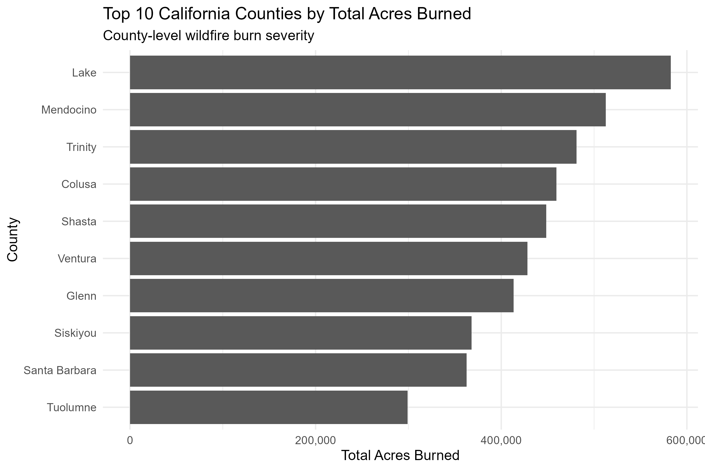

ArcGIS Online • R • Wildfire GIS
California Wildfire Spatial Analysis — 2013–2019
This interactive GIS project analyzes California wildfire patterns from 2013–2019. Wildfire incident data was processed in R, summarized by county, and joined to California county boundaries in ArcGIS Online to visualize wildfire frequency, acres burned, and county-level wildfire severity.
Workflow
- Cleaned and summarized wildfire incident data using R.
- Created county-level fire frequency, acres burned, and severity metrics.
- Joined wildfire statistics to California county polygons in ArcGIS Online.
- Built interactive choropleth maps with pop-ups and visual classification.



